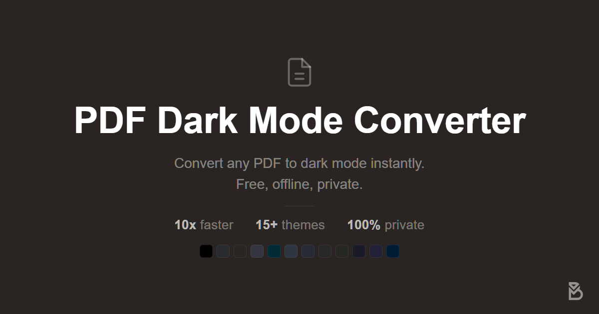
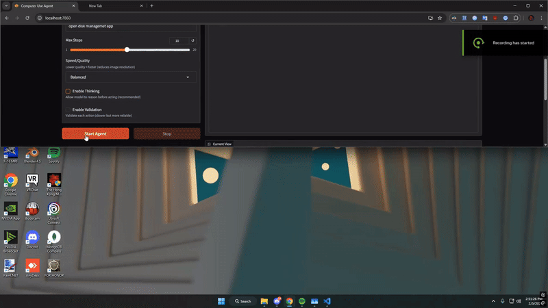
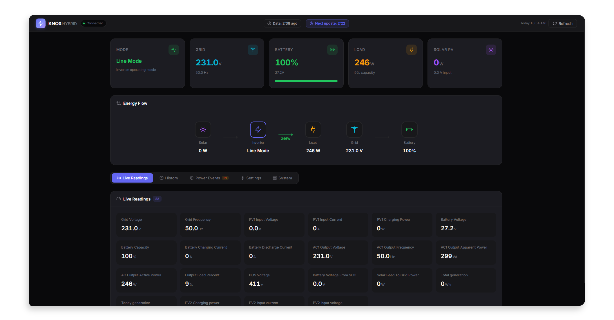
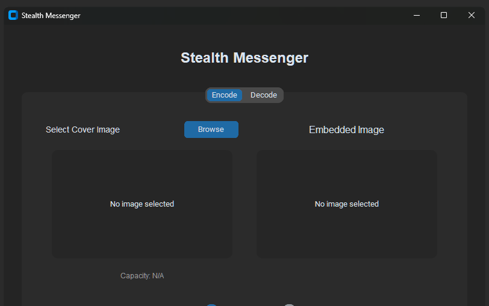

01★25PDF DARK MODE
The privacy-first, browser-native PDF theming tool. 16+ themes, GPU-accelerated, fully offline — a 50-page PDF in seconds, and your files never leave the device.
CS STUDENT · FULL-STACK DEV · ISLAMABAD 🇵🇰
Turning theory into practice.
I build fast, private, genuinely useful software — web tools, native desktop apps, and the occasional dive into how things really work. Open source by default.
Open to internships, freelance & collaborations
I'm BrAtUkA — a computer-science student and developer based in Islamabad.
I work across the stack: web apps, native desktop tools, and the odd security or reverse-engineering project. Most of what I've built began as something I needed and couldn't find — so I made it, then open-sourced it.
Lately I've spent most of my time in Rust and local-first tooling, and I learn fastest by taking apart things that already work.

01★25The privacy-first, browser-native PDF theming tool. 16+ themes, GPU-accelerated, fully offline — a 50-page PDF in seconds, and your files never leave the device.

02★3A local VLM-powered agent that controls your computer through natural language. It sees your screen and acts on it — no cloud keys, nothing leaving your machine.

03★8A lightweight Rust + Tauri system-tray app for real-time Knox solar-inverter monitoring — live dashboard, history and instant outage alerts, sipping resources.

04★3Hide text or whole files inside images with AES-256 encryption — an LSB steganography GUI built in Python. What you can't see, you can't crack.
Currently open to internships, freelance & collaborations — tooling, reverse-engineering puzzles, or just to say hi.
bratuka@bratuka.dev ↗